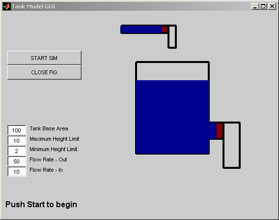
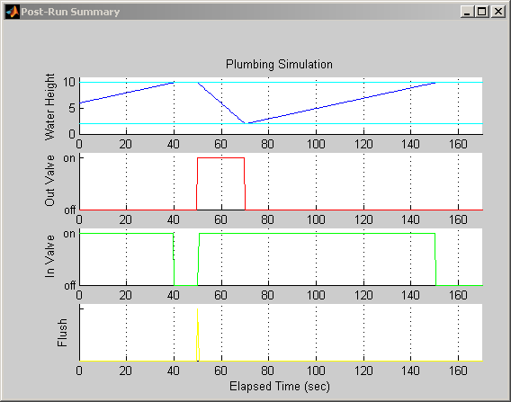
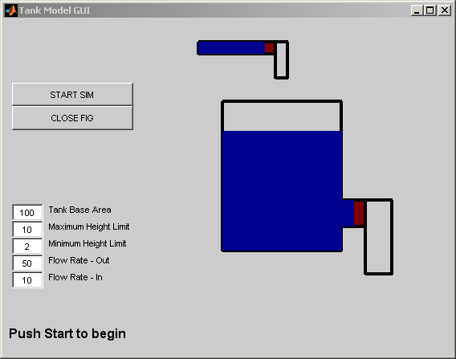
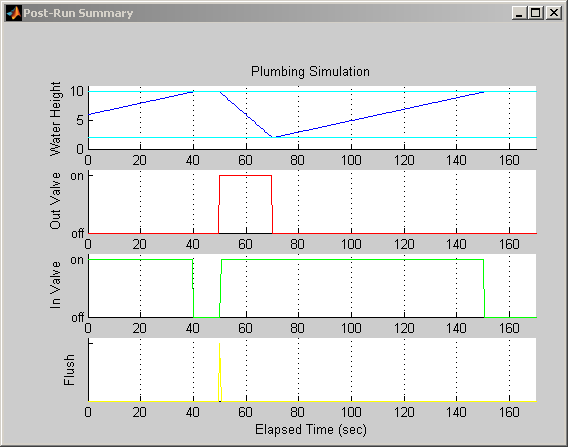

Tank Fill and Empty with Animation
This demonstration shows how to model the dynamics of liquid in a tank. The associated animation provides a graphical display of the tank as it empties and refills, based on user-defined tank parameters. The tank empties at the start of the simulation and again part way through the simulation. When the simulation is stopped, a plot is generated showing the liquid height and the states of the two valves.
  
 